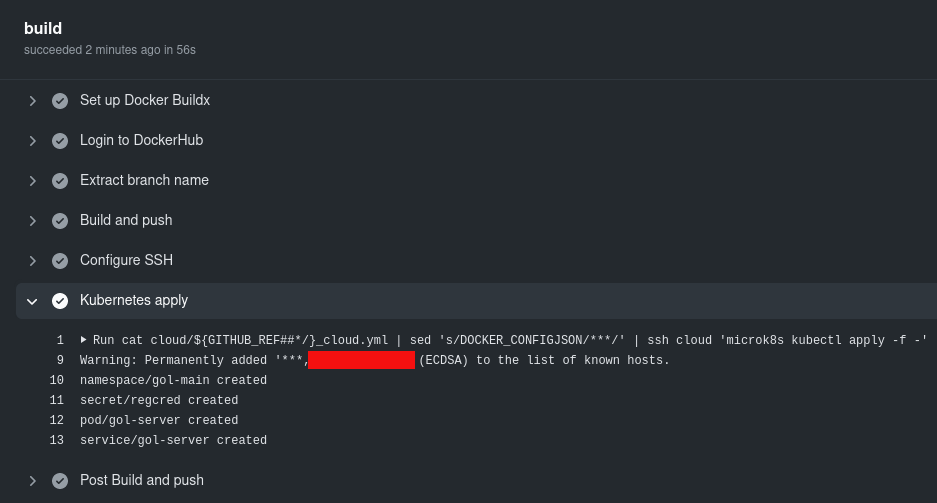

Kubernetes, una visión práctica
Nota: por brevedad y en general, cualquier afirmación en este blog
Introducción
Kubernetes es una gran idea que bien podría convertirse en el HTTP de los despliegues. La gente comenta que es difícil, ¿difícil?, no se, ¿encofrar es difícil?, ¿hacer una soldadura con arco es difícil?, ¿reparar las sirgas de un ascensor es difícil?, ¿conducir un camión de 25 toneladas es difícil?…
En mi opinión las operaciones de despliegues deberían ser planificadas e implementadas únicamente por profesionales expertos en sistemas (yo no considero que yo lo sea, lo hago por hobby).
Este post expone cómo en unos pocos pasos podemos configurar integración continua desde el codebase a una nube kubernetes en que se crean automáticamente diferentes entornos para diferentes ramas de código.
Si las migraciones se hacen adecuadamente, planificadas y testeadas en cada entorno (test, stage, prod) hay 0 tiempo de parada de servicio. De forma similar con las dependencias entre servicios, cambios planificados permiten evolucionar el sistema sin fricciones. El único riesgo entonces, es la posible pérdida o corrupción del estado (db, cachés, fs, …) que, si se ha probado adecuadamente en stage, reducirá al mínimo la probabilidad de un downtime para restaurar y resetear al último estado correcto.
Todo el ciclo de desarrollo y despliegue estará guiado por el codebase.
Paso 0: nube de kubernetes
Ten a mano una nube de kubernetes, las hay muchas y muy caras, esas las pagan los clientes que son pobres, yo que soy rico me conformaré con instalar microk8s en mi sobrado VPS de 100 euros/año.
Vale, ya tienes acceso a una nube kubernetes y puedes hacer cosas como kubectl get namespaces.
Paso 1: hacer una aplicación
Crea alguna aplicación que haga algo, lo normal últimamente viene a ser cosas sobre http:
$ git clone https://github.com/...Por ejemplo, un endpoint que escribe el entorno en el que se encuentra:
return ResponseEntity.ok(ofNullable(System.getenv("GOL_ENV")).orElse("unknown"));De tal modo que un:
$ mvn spring-boot:runEscribe:
$ curl -s -H Accept:application/json http://localhost:8080/v1/status
unknownPero un:
$ GOL_ENV=local mvn spring-boot:runEscribe:
$ curl -s -H Accept:application/json http://localhost:8080/v1/status
localVale, ya tienes una aplicación que hace algo.
Nota: anota y ten en cuenta todas las dependencias externas que pueda tener (bases de datos, nosqls, endpoints, …).
Paso 2: generar entregable
Usa algo para que se construya tu entregable y mételo en algún sitio para que se construya. Los Action de github son un buen sitio:
name: my app
on:
push:
branches:
- main
jobs:
build:
runs-on: ubuntu-latest
steps:
- uses: actions/checkout@v2
- name: Set up JDK 1.8
uses: actions/setup-java@v1
with:
java-version: 1.8
- name: Cache Maven packages
uses: actions/cache@v2
with:
path: ~/.m2
key: ${{ runner.os }}-m2-${{ hashFiles('**/pom.xml') }}
restore-keys: ${{ runner.os }}-m2
- name: Build with Maven
run: mvn -B -q clean package --file java/pom.xml
...Vale, ya se construye automáticamente cuando alguien pushea en las ramas importantes.
Paso 4: crear imagen docker
Mételo en una imágen docker adecuada para que cualquiera pueda levantar tu app. Por ejemplo con el Dockerfile:
FROM openjdk:8-jre-alpine
COPY ./java/myapp/target/myapp.jar /myapp.jar
CMD ["java", "-jar", "/myapp.jar"]Vale, ya cualquiera puede levantar tu aplicación más fácilmente que instalándola de la Play Store.
Paso 5: publicar en repositorio de imágenes
Pues junto con el empaquetado, genera esa imágenes y métela en algún repo de imágenes, dockerhub es un buen sitio (modifica el yml de los action), en este caso, queremos tener una versión por cada rama de interés (configurada antes), yo usaré la rama, así tendré la imagen de test, stage, prod, …:
- name: Set up QEMU
uses: docker/setup-qemu-action@v1
- name: Set up Docker Buildx
uses: docker/setup-buildx-action@v1
- name: Login to DockerHub
uses: docker/login-action@v1
with:
username: my-proj
password: ${{ secrets.GIT_AUTH_TOKEN }}
- name: Extract branch name
shell: bash
run: echo "##[set-output name=branch;]$(echo ${GITHUB_REF##*/})"
id: ebranch
- name: Build and push
uses: docker/build-push-action@v2
with:
context: .
file: ./images/gol-server/Dockerfile
platforms: linux/amd64
push: true
tags: my-proj/gol:server-${{ steps.ebranch.outputs.branch }}Vale, ya tienes tus entregables en un repositorio, puedes versionarlos, etc…
Nota: guardar imágenes es caro, puedes crear imagen por versión, pero yo prefiero reconstruirlas si hace falta, total ¡sólo es crear una rama de código!
Paso 6: acceder a la nube
No he visto que existan Actions en Github para desplegar sobre microk8s (si para Azure claro), pero podemos hacerlo por ssh:
Añadiríamos:
- name: Configure SSH
run: |
mkdir -p ~/.ssh/
echo "$SSH_KEY" > ~/.ssh/cloud.key
chmod 600 ~/.ssh/cloud.key
cat >>~/.ssh/config <<END
Host cloud
HostName $SSH_HOST
User $SSH_USER
IdentityFile ~/.ssh/cloud.key
StrictHostKeyChecking no
END
env:
SSH_USER: ${{ secrets.K8S_SSH_USER }}
SSH_KEY: ${{ secrets.K8S_SSH_KEY }}
SSH_HOST: ${{ secrets.K8S_SSH_HOST }}Vale, nuestra pipe de despliegue ya tiene acceso a la nube.
Paso 7: crea tu descripción de despliegue en la nube
Lo habitual será que cada entorno tenga sus propias particularidades, restricciones de acceso, bases de datos, reglas de escalado, cuota máxima de “cosas”, … en kubernetes puedes definir todos los recursos que necesite tu aplicación. En este caso, mi pobre microk8s no puede redirigir el tráfico de forma elegante (bueno sí puede claro, pero no me apetece configurarlo), pero me basta con que quede públicamente en algún puerto, otros escenarios incluirían un nginx, varnish, etc… en todo caso, todo lo que necesitamos es definir dicho escenario para cada rama (aka entorno de integración continua) en un fichero como cloud/main_cloud.yml:
apiVersion: v1
kind: Namespace
metadata:
name: gol-main
annotations:
description: See https://github.com/josejuan/my-proj
---
apiVersion: v1
kind: Pod
metadata:
namespace: gol-main
name: gol-server
labels:
type: gol-server
spec:
containers:
- name: gol-server
image: my-proj/gol:server-main
env:
- name: GOL_ENV
value: gol-main
ports:
- containerPort: 8080
---
apiVersion: v1
kind: Service
metadata:
namespace: gol-main
name: gol-server
spec:
type: NodePort
selector:
type: gol-server
ports:
- protocol: TCP
port: 8080
nodePort: 30101Básicamente crea un nuevo espacio de nombres para nuestro despliegue, crea un pod para alojar nuestro servicio y lo redirige con un NodePort para que pueda publicarlo en mi VPS.
Vale, pues ya tenemos tantos despliegues automáticos como necesitamos.
Nota: si te fijas he creado un pod directamente, para producción u otros escenarios crearíamos deployments para autoescalado, etc… ¡probar múltiples configuraciones de despliegue nunca ha sido tan sencillo!
Pruebas
Vale, ¡ya hemos terminado! y comiteado en la rama main y se ha ejecutado nuestra pipe:

Eso significa que un curl al NodePort debe funcionar (y que según nuestra nube y entorno estará publicado de una u otra forma en nuestra definición kubernetes), veamos:
$ ssh vk8 'curl localhost:30101/v1/status'
gol-main¡Genial! ahora si creamos una nueva rama, deberá desplegarse automáticamente, veamos:
$ git checkout -b featurex
Cambiado a nueva rama 'featurex'
$ sed -i 's/\- main/\- main\n - featurex/g' .github/workflows/on_push.yml
$ cat cloud/main_cloud.yml | sed 's/\-main/\-featurex/g; s/30101/30102/g' > cloud/featurex_cloud.yml
$ git add . && git commit -m 'my impresionante featurex' && git push --set-upstream origin featurexNada más y…
$ ssh vk8 'for i in 1 2; do echo `curl -s -w ": %{http_code}" localhost:3010$i/v1/status`; done'
gol-main: 200
gol-featurex: 200Para limpiar, únicamente tenemos que borrar la rama y el namespace en la nube (por supuesto podemos hacer una pipe que limpie la nube al borrar la rama):
$ git checkout main
Cambiado a rama 'main'
$ git branch -d featurex
Eliminada la rama featurex (era a6de8bc)..
$ git push origin --delete featurex
- [deleted] featurex
$ ssh vk8 'kubectl delete namespace gol-featurex'
namespace "gol-featurex" deletedSi ahora lanzamos el curl de antes, obtendremos el del despliegue main pero ya no el de featurex:
gol-main: 200
: 000Sencillo y cómodo ¿verdad?
Notas
Se pueden incluir sin demasiadas complicaciones multitud de elementos en tus despliegues automáticos, la base de datos por ejemplo, puede formar perfectamente parte de tu escenario y ésta se crearía caso de no existir para un determinado entorno. Incluso los endpoint finales y dns pueden ser configurados automáticamente de tal forma que tus entornos estén disponibles como https://mi-rama-recien-creada-para-probar-x-cosa.mi-proyecto.com/..., únicamente añadiendo esa rama en on_push.yml. Otra cosa por supuesto es que hacer tales cosas sean realmente necesarias en tu escenario.
En un entorno multiproyecto (varios codebases fuertemente acoplados) simplemente tenemos que tener en cuenta que, o bien creamos ramas comunes que desplegarán sobre el mismo espacio de nombres, o bien debemos mapear cada codebase para usar determinados servicios; si el número de despliegues no es demasiado alto (ej. más de 20, 30, …) mi recomendación es un único espacio de nombres común para todos los codebases, al fin y al cabo, si no están tan acoplados, quizás debería sacarlo del proyecto.
Extra
Si usas repos privados de docker hub deberás establecer las credenciales de acceso, por ejemplo:
$ kubectl create secret docker-registry dhcred \
--docker-username=xxx \
--docker-password=xxx \
--docker-email=xxx@gmail.com \
--docker-server=https://index.docker.io/v1/Pero como todo parte del codebase y queremos que funcione en cualquier nube (sic) y siempre dentro del namespace al que nos den acceso, lo suyo es meterlo en el fichero de despliegue. Para eso haremos dos pasos, añadimos la creación del scret de forma declarativa y la usamos en el image pull:
...
---
apiVersion: v1
data:
.dockerconfigjson: DOCKER_CONFIGJSON
kind: Secret
metadata:
name: regcred
namespace: gol-main
type: kubernetes.io/dockerconfigjson
---
...
spec:
imagePullSecrets:
- name: regcred
containers:
- name: gol-server
...Como son credenciales y ese yaml lo inyectamos directamente en la nube, debemos reemplazarlo en algún momento, precisamente ahí, cambiando la pipe:
...
- name: Kubernetes apply
run: |
cat cloud/${GITHUB_REF##*/}_cloud.yml | sed 's/DOCKER_CONFIGJSON/${{ secrets.DOCKER_CONFIGJSON }}/' | ssh cloud 'microk8s kubectl apply -f -'